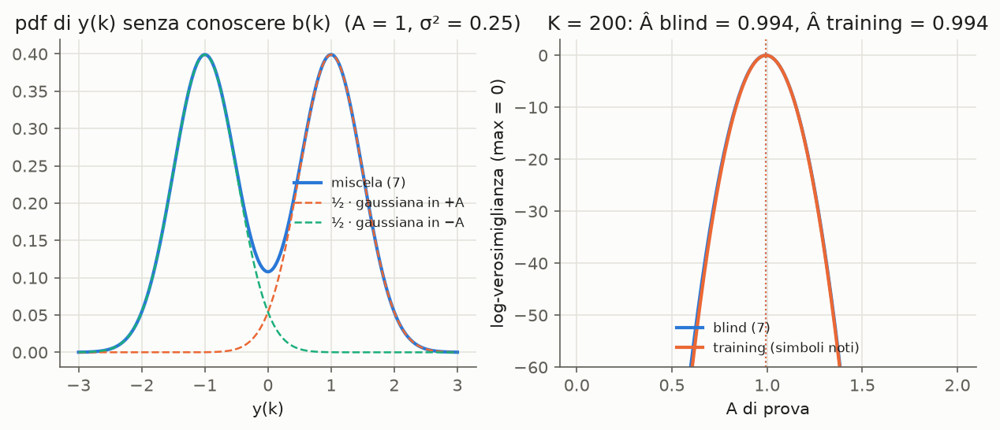
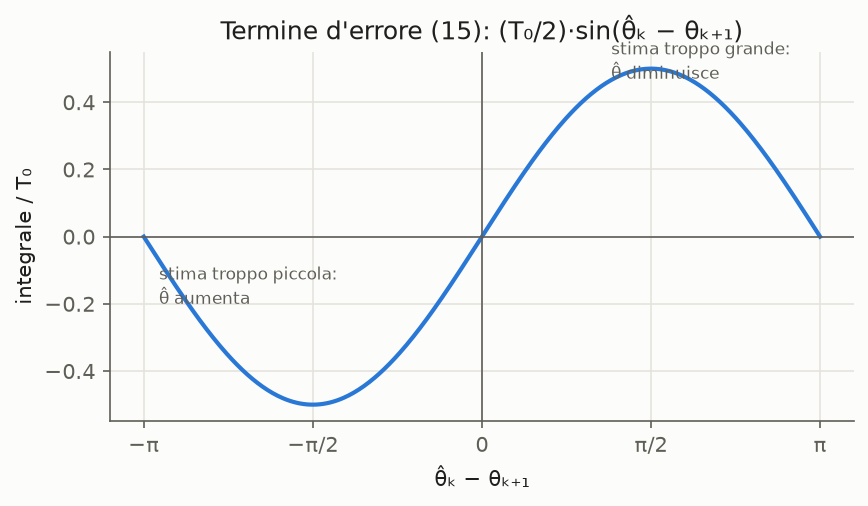

Home · Lezioni · Lezione 13 · 09/11
Stima dei parametri per la sincronizzazione
Ritardo e offset dell'oscillatore, timing e portante, stima ML (ampiezza training-based e blind, fase), PLL e Costas loop.
Indice della lezione
- Il problema della sincronizzazione
- Perché serve sincronizzare
- Effetto di ritardo e offset dell'LO (1/2)
- Effetto di ritardo e offset dell'LO (2/2)
- Il modello in banda base complessa
- Derivazione del modello (1/4)
- Derivazione del modello (2/4): ramo in fase
- Derivazione del modello (3/4): ramo in quadratura
- Derivazione del modello (4/4): ricombinazione
- Sincronizzazione di tempo e di portante
- Compiti e fasi
- Modalità decision-directed e blind
- Fondamenti della stima dei parametri
- Il problema della stima
- Il modello dei dati
- Esempio: livello continuo nel rumore
- Approccio classico e approccio bayesiano
- Stima a massima verosimiglianza
- Esempio: stima ML dell'ampiezza
- Il modello
- Training-based e blind
- Approccio training-based
- Blind approach (1/2)
- Blind approach (2/2)
- Conclusioni
- La rivelazione M-aria come stima
- Segnalazione M-aria in AWGN rivisitata
- Stima ML della fase
- Il modello e l'origine della fase
- Fase costante su più simboli
- La funzione da massimizzare
- Lo stimatore e lo schema
- Inseguimento della fase
- Phase tracking
- Steepest ascent e gradient descent
- Il phase-locked loop
- Il modello
- Funzione costo e aggiornamento
- La struttura del PLL
- VCO e aggancio
- Il termine d'errore
- Costas loop
- Spiegazioni e dimostrazioni passo-passo
- Domande da esame
Il corso, slide per slide
Il problema della sincronizzazione
Perché serve sincronizzare
- Finora si è supposto che trasmettitore e ricevitore siano perfettamente sincronizzati: in pratica l'ipotesi non è sempre vera, e il ricevitore deve riuscire ad agganciarsi al segnale in ingresso.
- Al ricevitore arriva y_p(t)=A\,u_p(t-\tau)+n_p(t), dove n_p(t) è la versione passa-banda del rumore termico.
- Poiché f_c\tau\gg1, anche piccoli sfasamenti provocano errori non trascurabili.
- Si suppone che l'oscillatore locale (LO) del ricevitore sia a f_c-\Delta f, per vedere l'effetto del non perfetto accordo tra i due oscillatori. Con il ritardo le due componenti si accoppiano: y_I dipende da v_I e v_Q anche dopo il filtro, e non si riesce più a disaccoppiare le componenti I e Q del segnale. Il ritardo compare sia in \theta sia in \tau.
- L'effetto della non sincronizzazione è il termine 2\pi\Delta f\,t, che dipende dal tempo.
Effetto di ritardo e offset dell'LO (1/2)
- Segnale in banda base complessa: u(t)=\sum_nb(n)\,g_{TX}(t-nT), con \{b(n)\}_n sequenza dei simboli d'informazione, g_{TX}(t) impulso di trasmissione e T periodo di simbolo.
- u(t) è portato in banda passante da un LO alla frequenza portante f_c: u_p(t)=\sqrt2\,\text{Re}(u(t)\,e^{j2\pi f_ct}).
- Il canale è modellato come un sistema non dispersivo, che causa solo una scalatura d'ampiezza e un ritardo (appunti: non deforma la forma d'onda, al più ne cambia ampiezza e ritardo):
con A e \tau ampiezza e ritardo incogniti e n_p(t) rumore passa-banda.
Effetto di ritardo e offset dell'LO (2/2)
- Il segnale ritardato è
- La fase \theta è molto sensibile al ritardo \tau, perché f_c assume valori molto grandi (f_c\tau\gg1).
- Al ricevitore y_p(t) è riportato in banda base da un LO la cui frequenza in genere differisce da quella del trasmettitore. Se l'LO è a f_c-\Delta f, l'uscita del down-converter è l'inviluppo complesso di y_p(t) rispetto a f_c-\Delta f:
con n(t) WGN complesso. Appunti: \Delta f è l'offset (mismatch) di frequenza, e produce una rotazione residua.
- Appunti: il ritardo compare due volte nella (1), in \theta e nell'argomento dell'impulso. Il motivo è che il segnale trasmesso è u_p(t)=\sqrt2\,\text{Re}\{u(t)e^{j2\pi f_ct}\}: quando il canale ritarda il segnale, il ritardo agisce sia sull'inviluppo sia sull'esponenziale, u_p(t-\tau)=\sqrt2\,\text{Re}\{u(t-\tau)e^{j2\pi f_c(t-\tau)}\}.
Il modello in banda base complessa
Derivazione del modello (1/4)
- Il segnale ricevuto è y_p(t)=\sqrt2A\,\text{Re}\{u(t-\tau)e^{j(\omega_ct+\theta)}\}+n_p(t), con \omega_c=2\pi f_c e \theta=-2\pi f_c\tau.
- Si pone v(t)\triangleq A\,u(t-\tau)e^{j\theta}=v_I(t)+jv_Q(t) (appunti: l'inviluppo complesso ritardato, sfasato e scalato, cioè il segnale utile che arriva al ricevitore). Sviluppando la parte reale:
- Il ricevitore usa un LO a \omega_{LO}=2\pi(f_c-\Delta f) con due rami in quadratura (appunti: down-conversion con un oscillatore che ha un offset \Delta f):
Derivazione del modello (2/4): ramo in fase
- Si moltiplica y_p per \sqrt2\cos(\omega_{LO}t) trascurando per ora il rumore:
- Con le formule di prostaferesi e \varphi(t)\triangleq(\omega_c-\omega_{LO})t=2\pi\Delta f\,t:
(appunti: il termine somma sta alla frequenza 2f_c-\Delta f, il termine differenza è 2\pi\Delta f\,t).
- Il filtro passa-basso elimina i termini ad alta frequenza:
- Appunti: y_I è la componente in fase dell'inviluppo complesso del segnale ricevuto rispetto a f_c-\Delta f, e dipende sia dalla componente in fase sia da quella in quadratura dell'inviluppo dello stesso segnale rispetto a f_c. Un segnale passa-banda può avere più inviluppi complessi, a seconda della f_c che si considera.
Derivazione del modello (3/4): ramo in quadratura
- Si moltiplica y_p per -\sqrt2\sin(\omega_{LO}t), sempre senza rumore:
- Dopo il passa-basso: y_Q(t)=v_I(t)\sin\varphi(t)+v_Q(t)\cos\varphi(t)+n_Q(t), con n_Q(t)=\text{LPF}\{-\sqrt2\,n_p(t)\sin(\omega_{LO}t)\}.
Derivazione del modello (4/4): ricombinazione
- Ricombinando le uscite dei due rami si ottiene l'inviluppo complesso del segnale ricevuto:
con n(t)\triangleq n_I(t)+jn_Q(t).
- Ricordando v(t)=A\,u(t-\tau)e^{j\theta} e \varphi(t)=2\pi\Delta ft si ritrova la (1): y(t)=A\,e^{j(2\pi\Delta ft+\theta)}u(t-\tau)+n(t).
Sincronizzazione di tempo e di portante
Compiti e fasi
- Compiti del blocco di sincronizzazione del ricevitore:
- sincronizzazione di tempo (timing) ⇒ stima di \tau;
- sincronizzazione di portante ⇒ stima di \Delta f e \theta (appunti: lo sfasamento provocato dal ritardo). Appunti: anche se \theta è provocato dal ritardo, lo risolve il blocco di sincronizzazione della portante.
- Il processo avviene di solito in due fasi:
- acquisizione dei parametri: si ottiene una stima iniziale, spesso con un blocco di simboli di training noti posti in un preambolo all'inizio della trasmissione;
- inseguimento (tracking): le stime iniziali sono aggiornate di continuo per seguire i parametri che variano lentamente nel tempo (fenomeno di drift).
Modalità decision-directed e blind
- Nei sistemi a pacchetto, molto comuni sia su filo sia senza fili, la variazione dei parametri in un pacchetto è spesso trascurabile: la fase di tracking si può eliminare.
- Il tracking segue l'acquisizione, e durante il tracking i simboli di training non sono più disponibili. L'algoritmo lavora allora in uno di due modi:
- decision-directed ⇒ i simboli di training sono sostituiti dalle decisioni retroazionate dal demodulatore al blocco di sincronizzazione (appunti: la sincronizzazione è guidata dalle decisioni del demodulatore, per una stima continua dei parametri);
- blind ⇒ il blocco è progettato in modo da essere insensibile ai valori specifici dei simboli trasmessi (appunti: non riceve alcuna informazione dal demodulatore e conosce solo le proprietà statistiche dei simboli; stima i parametri senza sapere quali simboli sono stati trasmessi).
Fondamenti della stima dei parametri
Il problema della stima
- Il problema della stima consiste nell'estrarre i valori di parametri (qui \tau, \theta o \Delta f) da un segnale a tempo continuo o, in modo equivalente, da un segnale a tempo discreto o da un insieme di dati. Molti campi diversi usano la teoria della stima.
- Si ha l'insieme di K dati (appunti: campioni del segnale ricevuto) \{y(0),y(1),\dots,y(K-1)\} che dipende da un parametro incognito \theta; si vuole determinare \theta dai dati, cioè definire uno stimatore
con g(\cdot) una funzione.
Il modello dei dati
- Il primo passo è modellare matematicamente i dati. Essendo intrinsecamente aleatori, si descrivono con la pdf f(\mathbf y;\theta), \mathbf y\triangleq[y(0),y(1),\dots,y(K-1)] (appunti: la pdf congiunta dei K campioni, che dice quanto è probabile ottenere quei campioni).
- f(\mathbf y;\theta) è parametrizzata dal parametro incognito: si ha una famiglia di pdf, una diversa per ogni valore di \theta.
- Esempio: con K=1 e \theta uguale alla media,
Figura: tre pdf gaussiane della famiglia, centrate in \theta_1<\theta_2<\theta_3. Se il dato osservato y(0) è negativo, è ragionevole il valore \theta=\theta_1, quello della pdf più a sinistra.
Esempio: livello continuo nel rumore
- K osservazioni rumorose di un'ampiezza costante incognita A (appunti: il segnale inviato è costante e uguale ad A, e vi si aggiunge rumore):
- A è fissa, ma le osservazioni sono aleatorie: ripetendo l'esperimento con la stessa A si ottengono insiemi di dati diversi.
- Uno stimatore semplice (appunti: il più semplice) è la media campionaria:
\hat A è anch'essa una variabile aleatoria, con E[\hat A]=A (il rumore ha media nulla) e \text{Var}(\hat A)=\sigma^2/K (la varianza della somma di K termini indipendenti è K\sigma^2, divisa per K^2).
- Lo stimatore è non polarizzato (in media dà il valore giusto, senza errori sistematici) e consistente (più campioni si considerano, più la varianza si riduce: tende a zero per K\to\infty).
Approccio classico e approccio bayesiano
- Se il parametro è deterministico ma incognito ⇒ approccio classico: non c'è modo di includere informazioni a priori su \theta. La stima basata sulla (2) è un esempio di stima classica.
- Se il parametro è modellato come variabile aleatoria con una sua pdf ⇒ approccio bayesiano: il parametro da stimare è visto come una realizzazione della v.a. \theta.
- Nella stima bayesiana dati e parametro sono descritti dalla pdf congiunta
con f(\mathbf y\mid\theta) pdf condizionata (la conoscenza fornita dai dati, noto \theta) e f(\theta) pdf del parametro. La conoscenza a priori entra nella stima attraverso il modello stocastico del parametro.
- Va notata la differenza tra f(\mathbf y;\theta), una famiglia di pdf (approccio classico), e f(\mathbf y\mid\theta), una pdf condizionata (approccio bayesiano).
Stima a massima verosimiglianza
- Da qui si segue l'approccio classico e in particolare la stima a massima verosimiglianza (MLE): il valore di \theta che massimizza la funzione di verosimiglianza f(\mathbf y;\theta),
- Quando la pdf è vista come funzione del parametro incognito, con i dati \mathbf y fissati, si chiama funzione di verosimiglianza e si indica con \Lambda_\theta(\mathbf y), come nella rivelazione.
- Appunti: la decisione a massima verosimiglianza della rivelazione è un caso particolare della stima ML, in cui il parametro da stimare è il simbolo trasmesso e può assumere solo M valori. In entrambi i casi si usa la pdf dei valori osservati vista come funzione del parametro e si sceglie il valore che la massimizza. Nella rivelazione la massimizzazione è un confronto tra M valori, realizzato con un banco di correlatori; nella stima il parametro è continuo e si massimizza annullando la derivata.
Esempio: stima ML dell'ampiezza
Il modello
- Si considera un segnale antipodale binario all'uscita del down-converter, con \tau=0 e \Delta f=0 (appunti: niente ritardo e niente offset di frequenza, il segnale ricevuto è solo scalato):
- I campioni all'uscita della cascata filtro adattato g_{TX}(T-t) (che massimizza il rapporto segnale-rumore, vedi la rivelazione) e campionatore a kT, seguita dal decisore (figura), sono
con y(k)\triangleq y(kT), n(k)\triangleq n(kT)\sim\mathcal N(0,\sigma^2), b(k)\in\{+1,-1\} simboli trasmessi e A ampiezza incognita da stimare.
Training-based e blind
- Si vuole la stima ML di A dai dati \mathbf y=(y(0),\dots,y(K-1)). La stima dell'ampiezza è cruciale nei ricevitori per segnali modulati in ampiezza.
- Due casi:
- i simboli \{b(k)\} sono noti ⇒ stima training-based (appunti: stima basata su una sequenza di simboli noti);
- i simboli sono incogniti e modellati come v.a. statisticamente indipendenti ⇒ stima blind (appunti: non si sfruttano le decisioni del demodulatore).
- La stima ML è
(appunti: i campioni sono statisticamente indipendenti, quindi la pdf congiunta è il prodotto delle marginali e il logaritmo del prodotto è la somma dei logaritmi).
Approccio training-based
- Se b(k) è noto, y(k)=A\,b(k)+n(k) è una v.a. gaussiana con media A\,b(k) e varianza \sigma^2. La (3) diventa (appunti: resta l'esponente della pdf marginale, e massimizzare -(\cdot)^2 vuol dire minimizzarne l'argomento)
- Derivando rispetto ad A e annullando (b^2(k)=1):
- La MLE si ottiene correlando i campioni ricevuti con la sequenza di training. La generalizzazione a simboli complessi è lasciata al lettore (appunti: da generalizzare per segnali complessi).
Blind approach (1/2)
- La stima blind (cieca) è la stima senza sequenza di training. I simboli \{b(k)\} si modellano come v.a. statisticamente indipendenti che valgono \pm1 con uguale probabilità.
- Condizionato all'evento \{b(k)=+1\}, il campione y(k)=A+n(k) è gaussiano con media A e varianza \sigma^2:
- Condizionato all'evento \{b(k)=-1\}, il campione y(k)=-A+n(k) è gaussiano con media -A e varianza \sigma^2:
- Si richiama la legge della probabilità totale per le pdf: f(x)=\sum_{i=1}^nf(x\mid A_i)\,P(A_i).
Blind approach (2/2)
- Con la probabilità totale la funzione di verosimiglianza diventa una miscela di due gaussiane:
- La stima ML blind (appunti: il valore di A che massimizza la funzione di verosimiglianza) è \hat A=\arg\max_A\sum_{k=0}^{K-1}\log f(y(k);A) con f(y(k);A) data dalla (7).
- Annullando la derivata della funzione costo rispetto ad A si mostra che la MLE soddisfa l'equazione trascendente
(scrivendo la (7) come \frac{1}{\sqrt{2\pi\sigma^2}}e^{-\frac{y^2+A^2}{2\sigma^2}}\cosh\frac{Ay}{\sigma^2}, la derivata del logaritmo è -\frac{A}{\sigma^2}+\frac{y}{\sigma^2}\tanh\frac{Ay}{\sigma^2}).
Conclusioni
- La stima training-based usa simboli b(k) noti a trasmettitore e ricevitore (simboli di training), di solito in un preambolo all'inizio della trasmissione. È detta anche data-aided (DA) (appunti: assistita dai dati) e si può realizzare anche in modalità decision-directed, se le decisioni fornite agli algoritmi di sincronizzazione sono abbastanza affidabili.
- Le sequenze di training rendono robusta la stima ma comportano una perdita di risorse (appunti: una parte della trasmissione è occupata da segnali noti).
- La stima blind non richiede i simboli b(k) ma solo la loro statistica (informazione media) e la PSD del disturbo. È detta anche non-data-aided (NDA) ed è più complessa della DA.
La rivelazione M-aria come stima
Segnalazione M-aria in AWGN rivisitata
- Il test tra M ipotesi H_k:\ y(t)=s_k(t)+n(t), k=1,\dots,M, è un caso particolare di stima dei parametri, con parametro \theta_k=H_k che assume uno di M valori possibili.
- La funzione di verosimiglianza per la versione in banda base complessa del segnale ricevuto in AWGN (PSD totale 2\sigma^2, cioè \sigma^2 per componente reale) è
- La regola di decisione ML della rivelazione si interpreta come la MLE di un parametro a M valori:
con \lambda_k(y)=\log\Lambda_k(y), realizzata con un banco di correlatori (o di filtri adattati seguiti da campionatori).
🧩 Da dove viene la (8), passo per passo.
- Verosimiglianza di H_k. Se vale H_k, il rumore deve valere esattamente y-s_k. Il rumore è gaussiano complesso con varianza \sigma^2 per componente reale; proiettando su una base ortonormale come nella Lezione 9, la densità è
f(y\mid H_k)\propto\exp\Big(-\frac{1}{2\sigma^2}\lVert y-s_k\rVert^2\Big)
- Quadrato di una differenza complessa. Per un complesso \lvert a\rvert^2=a\,a^\ast, quindi
(y-s_k)(y-s_k)^\ast=yy^\ast-\underbrace{y\,s_k^\ast}_{z}-\underbrace{y^\ast s_k}_{z^\ast}+s_ks_k^\ast=\lvert y\rvert^2-2\,\text{Re}(y\,s_k^\ast)+\lvert s_k\rvert^2perché i due termini incrociati sono uno il coniugato dell'altro e z+z^\ast=2\,\text{Re}(z). Integrando nel tempo, con \langle y,s_k\rangle=\int y(t)\,s_k^\ast(t)\,dt:
\lVert y-s_k\rVert^2=\lVert y\rVert^2-2\,\text{Re}\langle y,s_k\rangle+\lVert s_k\rVert^2
- Rapporto con l'ipotesi «solo rumore». \Lambda_k è un rapporto di verosimiglianza: si divide per f(y\mid H_0)\propto\exp\big(-\lVert y\rVert^2/(2\sigma^2)\big), con H_0:\ y=n. Le costanti davanti e il termine \lVert y\rVert^2, uguale per tutte le ipotesi, si cancellano:
\Lambda_k=\frac{f(y\mid H_k)}{f(y\mid H_0)}=\exp\Big[-\frac{1}{2\sigma^2}\Big(-2\,\text{Re}\langle y,s_k\rangle+\lVert s_k\rVert^2\Big)\Big]
- Si raccoglie il -2: -\frac{1}{2\sigma^2}\big(-2\,\text{Re}\langle y,s_k\rangle+\lVert s_k\rVert^2\big)=\frac{1}{\sigma^2}\big(\text{Re}\langle y,s_k\rangle-\frac12\lVert s_k\rVert^2\big), che è l'esponente della (8).
Significato. Massimizzare \Lambda_k equivale a minimizzare \lVert y-s_k\rVert: si sceglie il segnale candidato più vicino al ricevuto. \text{Re}\langle y,s_k\rangle è il correlatore (quanto y somiglia a s_k); -\frac12\lVert s_k\rVert^2 toglie metà dell'energia del candidato, così i segnali più energetici non vincono solo perché «grandi». Controllo: nel caso reale binario, con N_0=2\sigma^2, si ritrova la (I.9) della Lezione 9, perché \frac{2}{N_0}=\frac{1}{\sigma^2}. La stessa struttura torna nella MLSE della Lezione 14, con l'intera sequenza al posto del singolo simbolo.
Stima ML della fase
Il modello e l'origine della fase
- Si riprende il modello (1), y(t)=A\,e^{j(2\pi\Delta ft+\theta)}u(t-\tau)+n(t), supponendo già fatte la sincronizzazione di tempo e la stima d'ampiezza.
- Il termine di fase comprende il mismatch degli LO e l'effetto Doppler (appunti: \Delta f produce una fase tempo-variante).
- Il mismatch degli LO è l'effetto dell'offset di frequenza tra gli oscillatori di trasmettitore e ricevitore: è dell'ordine di 10–100 ppm rispetto alla portante f_c.
- Lo spostamento Doppler nei canali radiomobili è v f_c/c, con v velocità relativa tra trasmettitore e ricevitore e c velocità della luce nel vuoto: circa 0,2 ppm per 200 km/h.
Fase costante su più simboli
- Con le bande tipiche dei segnali in banda base, la variazione di fase 2\pi\Delta f\,T indotta in un intervallo di simbolo da mismatch e Doppler si può supporre piccola ⇒ la fase si può prendere costante su più intervalli di simbolo (appunti: tempo-invariante).
- Modello: y(t)=e^{j\theta}s(t)+n(t), con \theta fase incognita.
- Dalla (8), la funzione di verosimiglianza diventa
La funzione da massimizzare
- \lVert s(t)\,e^{j\theta}\rVert^2=\lVert s(t)\rVert^2: non dipende da \theta.
- Ponendo \langle y(t),s(t)\rangle=|Z|\,e^{j\phi}=Z_c+jZ_s:
- La stima ML di \theta si ottiene massimizzando
Lo stimatore e lo schema
- La soluzione è
- Schema del blocco di stima (figura): il segnale passa-banda ricevuto y_p(t) è moltiplicato per \sqrt2\cos2\pi f_ct e per -\sqrt2\sin2\pi f_ct e filtrato passa-basso, dando y_c(t) e y_s(t); ciascuno passa per i filtri adattati s_c(-t) e s_s(-t) campionati in t=0; le uscite combinate danno Z_c e Z_s, e il blocco \tan^{-1}(Z_s/Z_c) fornisce \hat\theta_{ML}. Le combinazioni vengono da \langle y,s\rangle=\int(y_c+jy_s)(s_c-js_s)\,dt: Z_c=\langle y_c,s_c\rangle+\langle y_s,s_s\rangle, Z_s=\langle y_s,s_c\rangle-\langle y_c,s_s\rangle.
- Appunti: l'errore dovuto alla rotazione della costellazione non dipende dall'errore additivo.
Inseguimento della fase
Phase tracking
- Dopo la stima si possono aggiornare i parametri per seguirne le variazioni nel tempo.
- La maggior parte degli algoritmi di tracking massimizza rispetto a \theta una funzione costo J(\theta), di solito proporzionale alla log-verosimiglianza; la massimizzazione si fa con procedure iterative.
- Un approccio diffuso (appunti: uno degli algoritmi che possono realizzare il tracking) è l'algoritmo steepest ascent: parte da una stima iniziale di \theta e la modifica ripetutamente per far crescere J(\theta), finché si spera di convergere al valore che la massimizza.
Steepest ascent e gradient descent
- Partendo da un valore iniziale di \hat\theta, l'algoritmo (appunti: un algoritmo per minimizzare o massimizzare funzionali) ripete l'aggiornamento
con := operatore di assegnazione, \alpha learning rate (passo) e k indice del passo; J è la funzione da massimizzare.
- Se si deve minimizzare J(\theta) si usa il gradient descent (steepest descent):
Il phase-locked loop
Il modello
- Con questo schema si ricava la struttura classica del phase-locked loop (PLL) per l'inseguimento della fase della portante; per semplicità si lavora con segnali passa-banda nel dominio analogico (appunti: si usa questo framework per individuare e progettare il PLL).
- Si considera una sinusoide non modulata e rumorosa:
con \theta(t) fase da inseguire e n_p(t) WGN reale passa-banda di PSD \sigma^2. Con la convenzione passa-banda vista prima, questa sinusoide di ampiezza unitaria corrisponde all'inviluppo complesso u(t)=e^{j\theta(t)}/\sqrt2, e la derivazione del PLL non cambia.
- Alla fine del k-esimo intervallo si ha la stima \hat\theta_k e la si vuole correggere osservando il segnale nell'intervallo successivo, di durata T_0. La funzione di verosimiglianza (vedi la rivelazione) è
con \langle x_1(t),x_2(t)\rangle=\int_{T_0}x_1(t)x_2(t)\,dt per segnali reali.
Funzione costo e aggiornamento
- Ipotesi: f_cT_0\gg1 e \theta(t) lentamente variabile in [kT_0,(k+1)T_0]. Allora l'energia del segnale è \lVert s_p(t)\rVert^2\approx T_0/2 (appunti: serve un'ipotesi, altrimenti l'energia dipenderebbe da \theta(t); se \theta varia bruscamente non c'è garanzia che ne sia indipendente).
- Dalla (11) si costruisce la funzione costo
- Applicando lo steepest ascent (la derivata di \cos dà -\sin):
- Appunti: il PLL è la realizzazione di uno stimatore ML.
La struttura del PLL
- La realizzazione pratica della (12) è la struttura PLL della figura: il segnale ricevuto y_p(t)=\cos(2\pi f_ct+\theta)+ rumore è moltiplicato per -\sin(2\pi f_ct+\hat\theta) generato dal VCO; il prodotto passa per il loop filter, la cui uscita pilota il VCO.
- Il loop filter è un filtro passa-basso che realizza l'integrale della (12) (appunti: esegue l'integrale).
- Il VCO (voltage controlled oscillator) genera una portante la cui frequenza varia linearmente con l'ampiezza di un segnale di controllo.
VCO e aggancio
- Il prodotto tra portante generata e segnale ricevuto, filtrato passa-basso, va al VCO, la cui frequenza istantanea cambia secondo
- Se la tensione di controllo è c(t)=0, \hat\theta(t) è costante ⇒ stato di aggancio (phase-locked; appunti: condizione di aggancio).
- Per piccole variazioni di \hat\theta(t), ragionevoli durante il tracking,
che mostra che il PLL realizza una relazione come la (12).
- Per capire il comportamento del PLL si suppone il segnale ricevuto senza rumore.
Il termine d'errore
- Senza rumore, con la formula di Werner \sin a\cos b=\frac12[\sin(a+b)+\sin(a-b)]:
(il termine a 2f_c ha integrale trascurabile perché f_cT_0\gg1; \theta(t)\approx\theta_{k+1} nell'intervallo).
- \sin(\hat\theta_k-\theta_{k+1}) è un buon indicatore d'errore: se è positivo \hat\theta_k è maggiore di \theta_{k+1}, se è negativo è minore; il modulo dice quanto la stima precedente è lontana da \theta_{k+1}. Appunti: se \hat\theta=\theta il PLL è agganciato.
Costas loop
- Il PLL non funziona bene se il segnale d'ingresso ha rapide variazioni d'ampiezza o di fase dovute alla modulazione.
- Per i segnali modulati in ampiezza si può usare il Costas loop (figura): r(t) è moltiplicato per \cos[2\pi f_ct+\phi_v(t)] e per -\sin[2\pi f_ct+\phi_v(t)] (il secondo ottenuto dal primo con uno sfasatore \pi/2), ciascun prodotto passa per un LPF dando e_1(t) ed e_2(t); il prodotto e(t)=e_1(t)\,e_2(t) va al loop filter, che produce v(t) e pilota il VCO.
Spiegazioni e dimostrazioni passo-passo
Apri una voce per leggere la spiegazione in parole semplici e le dimostrazioni svolte riga per riga (🧩 = passaggio ricostruito da me).
Sincronizzazione
Spiegazione
- Più inviluppi per lo stesso segnale. L'inviluppo complesso dipende dalla frequenza di riferimento: rispetto a f_c è v(t), rispetto a f_c-\Delta f è v(t)e^{j2\pi\Delta ft}. Il ricevitore vede il secondo, e deve «riportarlo» al primo.
- Effetti sulla costellazione. A scala la costellazione, \theta la ruota di un angolo fisso, \Delta f la fa ruotare in continuazione, \tau sposta l'istante di campionamento ottimo. Gli appunti annotano che l'errore dovuto alla rotazione della costellazione non dipende dall'errore additivo: è un errore sistematico che non sparisce aumentando l'SNR, e va corretto stimando la fase.
- Chi stima cosa. Anche se \theta nasce dal ritardo, lo compensa il blocco di sincronizzazione di portante.
Perché importa
Tutte le prestazioni ricavate nelle Lezioni 9–11 (probabilita errore m aria) valgono con sincronizzazione perfetta. Una rotazione residua di fase avvicina i punti della costellazione ai confini delle regioni di decisione e fa crescere la probabilità d'errore; un \Delta f non compensato, dopo pochi simboli, rende le decisioni inutilizzabili.
Dimostrazioni passo-passo
Derivazione — La fase prodotta dal ritardo
Si parte da: u_p(t)=\sqrt2\,\text{Re}\{u(t)e^{j2\pi f_ct}\} (inviluppo complesso).
L'inviluppo complesso del segnale ritardato è u(t-\tau)e^{j\theta}: il ritardo trasla l'inviluppo e lo ruota di \theta.
🧩 Numeri miei (sensibilità): con f_c=2.4 GHz la fase compie un giro completo (2\pi) quando \tau cambia di 1/f_c\approx0.42 ns. Un errore di 0.1 ns, irrilevante per il timing di simboli lunghi 1 µs, sposta la fase di 2\pi\cdot2.4\cdot10^9\cdot10^{-10}\approx1.5 rad \approx86°. Per questo \theta si stima a parte (sincronizzazione di portante) e non si ricava dalla stima di \tau.
Derivazione — Down-conversion con LO disaccordato
Si parte da: y_p=\sqrt2[v_I\cos\omega_ct-v_Q\sin\omega_ct] (rumore trascurato), \omega_{LO}=\omega_c-2\pi\Delta f, \varphi=(\omega_c-\omega_{LO})t (upconversion e downconversion).
Ramo in fase, con \cos a\cos b=\frac12[\cos(a-b)+\cos(a+b)] e \sin a\cos b=\frac12[\sin(a-b)+\sin(a+b)], a=\omega_ct, b=\omega_{LO}t:
Ramo in quadratura, con \cos a\sin b=\frac12[\sin(a+b)-\sin(a-b)] e \sin a\sin b=\frac12[\cos(a-b)-\cos(a+b)]:
Ricombinazione:
Sanity check: con \Delta f=0 si ha \varphi=0, y_I=v_I, y_Q=v_Q: la down-conversion ideale della Lezione 4. Ipotesi: il passa-basso elimina i termini a \omega_c+\omega_{LO}\approx2\omega_c e lascia passare v (banda di v molto minore di f_c; \Delta f piccolo rispetto alla banda del filtro).
Il termine e^{j2\pi\Delta ft} è una rotazione che cresce nel tempo: la costellazione ricevuta gira con velocità angolare 2\pi\Delta f (appunti di 11-9: l'effetto della non sincronizzazione dipende dal tempo). In componenti, y_I mescola v_I e v_Q: non si riesce più a separare I e Q.
Derivazione — Ordini di grandezza di mismatch e Doppler
🧩 Numeri miei: con f_c=2 GHz il Doppler a 200 km/h vale circa 370 Hz, mentre il mismatch degli LO vale 20 kHz (10 ppm) – 200 kHz (100 ppm): domina il mismatch. Con \Delta f=20 kHz e R_s=10 Msimboli/s (T=0.1 µs) la rotazione per simbolo è 2\pi\Delta fT=2\pi\cdot2\cdot10^4\cdot10^{-7}\approx0.013 rad \approx0.7°: trascurabile sul singolo simbolo, ma dopo 100 simboli sono già circa 70°. Per questo la fase si tratta come costante su un blocco di simboli e poi si insegue (phase locked loop).
Derivazione — Stima ML della fase
Si parte da: la verosimiglianza (8) con s_k\to s\,e^{j\theta} (stima dei parametri).
Quindi \hat\theta=\arg\langle y,s\rangle=\tan^{-1}(Z_s/Z_c) (con l'arcotangente a quattro quadranti, che usa i segni di Z_c e Z_s).
Per lo schema: con y=y_c+jy_s e s=s_c+js_s,
ognuno dei quattro prodotti scalari è un filtro adattato (s_c(-t) o s_s(-t)) campionato in t=0, come nella figura.
Sanity check: senza rumore y=e^{j\theta}s e \langle y,s\rangle=e^{j\theta}\lVert s\rVert^2, il cui argomento è proprio \theta. Ipotesi: timing e ampiezza già stimati; fase costante sull'intervallo d'osservazione; segnale s(t) noto (training) o già deciso.
Stima dei parametri
Spiegazione
- Rivelazione come stima. La rivelazione ML della Lezione 9 è una stima ML in cui il parametro (il simbolo trasmesso) può assumere solo M valori: la massimizzazione è un confronto tra M numeri, fatto con un banco di correlatori. Nella stima il parametro è continuo e si massimizza annullando la derivata.
- Training (DA) e blind (NDA). Con il training la stima è semplice e robusta, ma una parte della trasmissione è occupata da simboli noti (perdita di risorse). La stima blind non spreca simboli ma richiede la statistica dei simboli e del rumore ed è più complessa: si risolve un'equazione trascendente (per esempio iterando \hat A\leftarrow\frac1K\sum y\tanh(\hat Ay/\sigma^2)).
- La modalità decision-directed sta in mezzo: usa le decisioni del demodulatore come se fossero simboli di training, il che funziona se le decisioni sono affidabili.
Perché importa
Le stime di ampiezza, fase, ritardo e frequenza servono al ricevitore per riportarsi nelle ipotesi del ricevitore ottimo (ricevitore ottimo awgn): senza sincronizzazione la costellazione ricevuta è scalata e ruotata e le regioni di decisione sono sbagliate. Sono il cuore della sincronizzazione.
Dimostrazioni passo-passo
Derivazione — Media e varianza della media campionaria
Si parte da: y(k)=A+n(k), n(k) i.i.d. \mathcal N(0,\sigma^2) (media e varianza).
🧩 Derivazione mia:
Sanity check: con K=1 si ritrova la varianza del singolo campione; per K\to\infty la varianza va a zero (consistenza). Ipotesi: rumore a media nulla (altrimenti lo stimatore è polarizzato) e campioni indipendenti (altrimenti compaiono le covarianze e la varianza non scende come 1/K).
La media campionaria è anche la MLE di A: massimizzare \sum_k\log\mathcal N(y(k);A,\sigma^2) equivale a minimizzare \sum_k(y(k)-A)^2, la cui derivata -2\sum_k(y(k)-A) si annulla per A=\frac1K\sum_ky(k) (🧩 osservazione mia, la slide non lo dice).
Derivazione — Stima training-based
Si parte da: (3) con f(y(k);A)=\mathcal N(y(k);Ab(k),\sigma^2).
Sanity check: senza rumore y(k)b(k)=Ab^2(k)=A per ogni k, e la media dà esattamente A. Ipotesi: simboli noti e antipodali (b^2=1); rumore gaussiano bianco (campioni indipendenti). Per simboli complessi qualunque (🧩) lo stesso conto con |y-Ab|^2 dà \hat A=\text{Re}\big\{\sum_kb^\ast(k)y(k)\big\}/\sum_k|b(k)|^2 per A reale.
Derivazione — Stima blind e funzione tanh
Si parte da: la miscela (7) (probabilita totale e bayes).
🧩 Derivazione mia:
Interpretazione: confrontando con la stima training-based, \tanh(\hat Ay(k)/\sigma^2) prende il posto del simbolo b(k): è una decisione soffice. Infatti, con simboli equiprobabili, E[b(k)\mid y(k)]=\frac{e^{Ay/\sigma^2}-e^{-Ay/\sigma^2}}{e^{Ay/\sigma^2}+e^{-Ay/\sigma^2}}=\tanh(Ay/\sigma^2) (Bayes con le (4)–(5)). Caso limite: ad alto SNR (A|y|/\sigma^2\gg1) \tanh\to\text{sgn}(y) e \hat A\approx\frac1K\sum_k|y(k)|: la stima diventa decision-directed, con le decisioni \text{sgn}(y(k)) al posto dei simboli noti. Ipotesi: simboli indipendenti ed equiprobabili, rumore gaussiano di varianza \sigma^2 nota.

🧩 Grafico mio (script output/grafici/genera_grafici_lezioni13_14.py). A sinistra la miscela (7) con A=1, \sigma^2=0.25: due gaussiane di peso ½ centrate in \pm A. A destra la log-verosimiglianza di 200 campioni simulati in funzione dell'A di prova: con questo SNR la curva blind e quella training hanno lo stesso massimo, e l'iterazione di punto fisso della tanh converge allo stesso \hat A.
Derivazione — Indipendenza e somma dei logaritmi
Con campioni indipendenti f(\mathbf y;A)=\prod_kf(y(k);A), e il logaritmo trasforma il prodotto in somma: \log f(\mathbf y;A)=\sum_k\log f(y(k);A). Il logaritmo è crescente, quindi non sposta il massimo. Lo annotano gli appunti.
Derivazione — Verosimiglianza della segnalazione M-aria (8)
Si parte da: H_k:\ y(t)=s_k(t)+n(t), rumore gaussiano complesso con varianza \sigma^2 per componente reale; ipotesi ausiliaria H_0:\ y=n come nella rivelazione.
🧩 Derivazione mia.
Sanity check: nel caso reale binario, con N_0=2\sigma^2, il logaritmo dà \frac{2}{N_0}\int ys\,dt-\frac{1}{N_0}\int s^2dt, la (I.9) della rivelazione binaria. Ipotesi: rumore gaussiano bianco complesso, circolare, indipendente dal segnale; segnali s_k noti al ricevitore. Lettura: \arg\max_k\Lambda_k equivale a \arg\min_k\lVert y-s_k\rVert, cioè decisione a minima distanza; \text{Re}\langle y,s_k\rangle è il correlatore, -\frac12\lVert s_k\rVert^2 la correzione per l'energia.
Phase-locked loop (PLL) e inseguimento della fase
Spiegazione
- Il PLL è uno stimatore ML iterativo: invece di calcolare \arg\langle y,s\rangle su un blocco, corregge la stima un po' alla volta usando l'errore \sin(\hat\theta-\theta).
- Schema. Il segnale ricevuto è moltiplicato per -\sin(2\pi f_ct+\hat\theta) prodotto dal VCO; il loop filter integra (media) il prodotto, togliendo il termine a 2f_c; la sua uscita pilota il VCO, che cambia fase finché l'errore si annulla.
- Costas loop. Il PLL non funziona bene se il segnale ha rapide variazioni d'ampiezza o di fase dovute alla modulazione. Per segnali modulati in ampiezza si usa il Costas loop: due rami, con \cos[2\pi f_ct+\phi_v(t)] e -\sin[2\pi f_ct+\phi_v(t)] (sfasatore \pi/2), due LPF che danno e_1(t) ed e_2(t), il loro prodotto e(t) nel loop filter e la tensione v(t) al VCO.
🧩 Perché il Costas loop funziona (spiegazione mia, le slide mostrano solo lo schema): con r(t)=m(t)\cos(2\pi f_ct+\theta) e \Delta\triangleq\theta-\phi_v, i due rami danno e_1=\frac12m(t)\cos\Delta ed e_2=\frac12m(t)\sin\Delta. Il prodotto è e=\frac14m^2(t)\sin\Delta\cos\Delta=\frac18m^2(t)\sin2\Delta: dipende da m^2\ge0, quindi il segno dei simboli (che nel PLL semplice invertirebbe l'errore) sparisce. Il prezzo è un'ambiguità di \pi: \sin2\Delta si annulla anche per \Delta=\pi.
Perché importa
Nei sistemi con tracking, la fase deriva nel tempo (mismatch e Doppler, sincronizzazione): una stima fatta una volta sola non basta. Il PLL e il Costas loop sono i blocchi che, nella pratica, tengono la costellazione ferma.
Dimostrazioni passo-passo
Derivazione — Energia del segnale ≈ T₀/2
🧩 Derivazione mia:
Quindi l'energia non dipende da \theta e nella (11) il termine -\frac12\lVert s_p\rVert^2 si può ignorare: resta J(\theta)=\langle y_p,s_p\rangle. Gli appunti lo dicono così: senza ipotesi l'energia dipenderebbe da \theta(t), e se \theta varia bruscamente non c'è garanzia che ne sia indipendente.
Derivazione — Aggiornamento (12)
Derivazione — Termine d'errore (15)
Si parte da: (12) senza rumore, y_p=\cos(2\pi f_ct+\theta(t)); formula di Werner \sin a\cos b=\frac12[\sin(a+b)+\sin(a-b)].
Sanity check: se \hat\theta_k=\theta_{k+1} l'integrale è nullo e la stima non cambia: è lo stato di aggancio (appunti: se \hat\theta=\theta, agganciato).
🧩 Convergenza (mia): con \theta costante e e_k\triangleq\hat\theta_k-\theta, la (12) diventa e_{k+1}=e_k-\alpha\frac{T_0}2\sin e_k. Per errori piccoli \sin e_k\approx e_k e e_{k+1}\approx(1-\alpha T_0/2)\,e_k: l'errore si riduce geometricamente se 0<\alpha T_0/2<2, e con \alpha T_0/2=1 si annulla in un passo (nel caso senza rumore). Un passo grande corregge in fretta ma, con il rumore, rende la stima più agitata: è il compromesso del learning rate.

🧩 Grafico mio. Il termine d'errore della (15) in funzione di \hat\theta_k-\theta_{k+1}: positivo quando la stima è troppo grande (la (12) la fa diminuire), negativo quando è troppo piccola, nullo all'aggancio. Vicino a 0 è quasi lineare: il modulo dice quanto la stima è lontana.
Derivazione — Il VCO realizza la (12)
Con c(t) uguale all'uscita del loop filter, cioè (a meno del segno) all'integrale del prodotto y_p\cdot\sin(\cdot), questa è la (12) con \alpha proporzionale a \gamma\Delta t. Se c(t)=0 la fase non cambia: stato di aggancio.
Derivazione — Inviluppo della sinusoide
\sqrt2\,\text{Re}\{\frac{e^{j\theta}}{\sqrt2}e^{j2\pi f_ct}\}=\text{Re}\{e^{j(2\pi f_ct+\theta)}\}=\cos(2\pi f_ct+\theta): con la convenzione \sqrt2\,\text{Re}\{\cdot\} della Lezione 4 l'inviluppo della sinusoide unitaria è e^{j\theta}/\sqrt2, come dice la slide.
Domande da esame
- Ricavare il modello in banda base complessa con ritardo e offset dell'LO, partendo dalla down-conversion a f_c-\Delta f.
- Perché la fase \theta è così sensibile al ritardo? Chi la compensa?
- Differenza tra acquisizione e tracking; tra modalità decision-directed e blind.
- Differenza tra approccio classico e bayesiano alla stima; definizione di MLE.
- Stimare l'ampiezza con e senza training: ricavare le due espressioni e commentarle.
- In che senso la rivelazione ML è un caso particolare della stima ML?
- Ricavare la stima ML della fase e disegnare lo schema a blocchi.
- Ricavare l'aggiornamento del PLL dallo steepest ascent e commentare il termine d'errore.